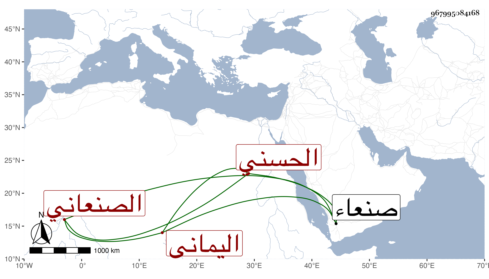

0902Sakhawi.DawLamic.ITO20230111-ara1.EIS1600.967995084168
Biography ID: 967995084168
906
محمد بن إبراهيم بن علي بن المرتضى بن الهادي بن يحيى بن الحسين بن القسم بن إبراهيم بن إسماعيل بن إبراهيم بن الحسن بن الحسن بن علي بن أبي طالب العز أبو عبد الله الحسني اليماني الصنعاني أخو الهادي الآتي . ولد تقريبا سنة خمس وستين وسبعمائة وتعانى النظم فبرع فيه وصنف في الرد على الزيدية العواصم والقواصم في الذب عن سنة أبي القسم واختصره في الروض الباسم عن سنة أبي القسم وغيره ذكره التقي بن فهد في معجمه وأنشد عنه قوله :
| العلم ميراث النبي كذا أتى | في النص والعلماء هم وراثه |
| فإذا أردت حقيقة تدرى لمن | وراثه فكيف ما ميراثه |
| ما ورث المختار غير حديثه | فينا وذاك متاعه وأثاثه |
| قلنا الحديث وراثة نبوية | ولكل محدث بدعة إحداثه |
وكان لقيه له بمنزله من صنعاء سنة عشر . ومات في المحرم سنة أربعين وأرخه بعضهم في التي قبلها بصنعاء اليمن وله ذكر في أخيه الهادي من أنباء شيخنا فإنه قال : وله أخ يقال له محمد مقبل على الاشتغال بالحديث شديد الميل إلى السنة بخلاف أهل بيته رحمه الله .
